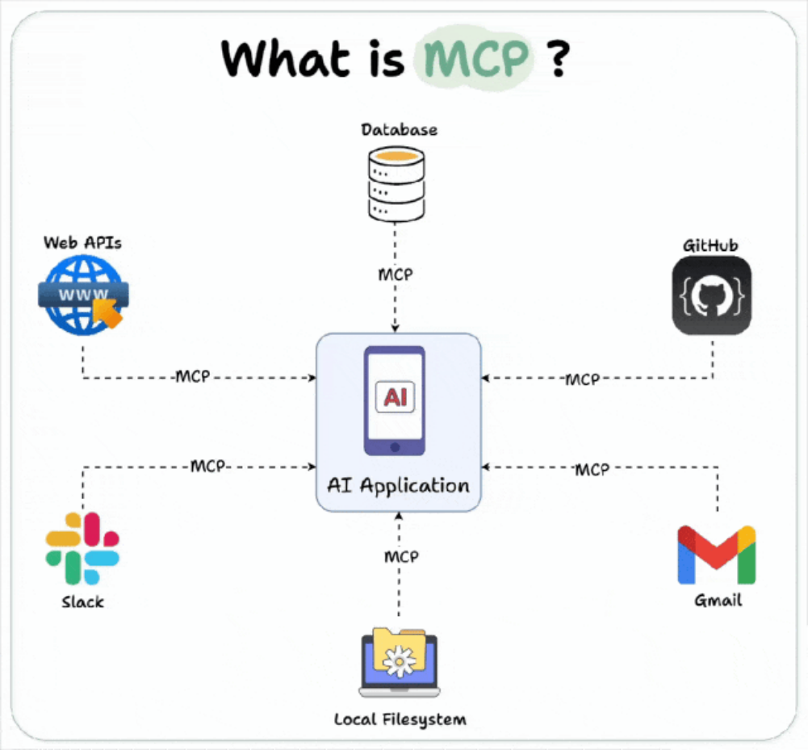
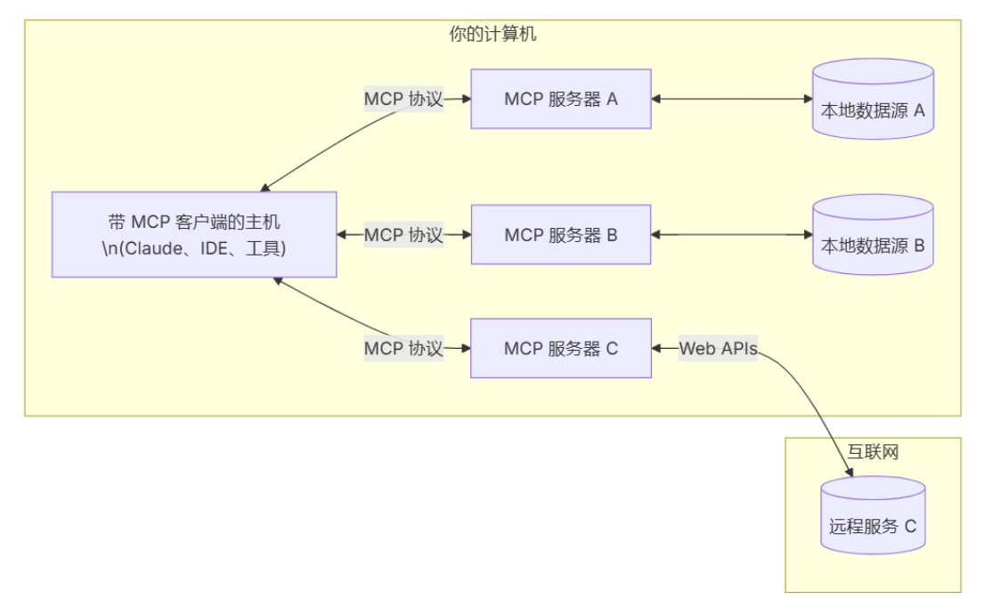
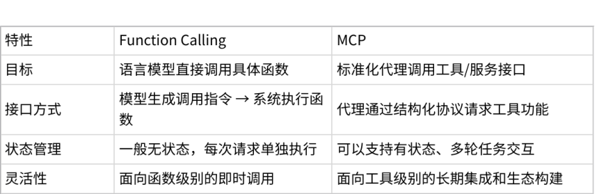

MCP（Model Context Protocol）
随着 AI Agent 技术的发展，系统中可调用的工具、数据资源以及外部服务越来越多。 在简单的应用中，开发者可以通过手动配置 Tool 或 Function 来完成调用，但当系统规模不断扩大 时，工具管理、资源访问以及上下文传递都会变得越来越复杂。
例如，一个企业级 AI Agent 系统可能需要访问：
-
企业内部数据库
-
文档知识库
-
搜索服务
-
文件系统
-
API 服务
• 第三方 SaaS 系统
如果每一种资源都通过单独的接口接入，那么系统架构会变得非常混乱，同时也难以实现统一的权限 控制与上下文管理。 为了解决这一问题，提出了 MCP（Model Context Protocol，模型上下文协议）。

MCP 的核心目标是：
为大模型提供统一的工具、资源和上下文访问协议，使 AI Agent 可以以标准化方式访问外部系统。 简单来说，MCP 相当于为 AI Agent 构建了一层 标准化的能力接口层，使得模型可以像访问操作系统资 源一样访问各种工具和数据。
MCP 概念
MCP（Model Context Protocol）是一种用于连接 大模型与外部系统 的开放协议。

它的设计目标是让模型能够安全、标准化地访问各种外部资源。 在传统 AI 系统中，模型通常只能访问有限的输入信息，例如：
-
用户问题
-
系统 Prompt
-
历史对话
-
而 MCP 则扩展了模型可访问的上下文来源，使模型可以动态获取更多信息，例如：
-
企业数据库数据
-
文件系统内容
-
知识库文档
-
实时 API 数据
-
外部工具执行结果
因此，在 MCP 架构下，大模型不再只是一个文本生成组件，而是成为一个能够 主动获取上下文并执行 任务的智能代理。
从系统结构来看，MCP 主要解决三个问题：
第一，统一工具访问方式。
不同工具可以通过 MCP 注册为标准能力，模型可以通过统一接口调用。
第二，统一资源访问方式。
文件、数据库、API 等资源都可以通过 MCP 暴露给模型。
第三，统一上下文管理。 模型在推理过程中所需的上下文可以通过 MCP 动态获取，而不是完全依赖 Prompt。
MCP 架构
从系统设计角度来看，MCP 通常位于 LLM 与外部系统之间，充当一个能力协调层。 一个典型的 MCP 架构如下：
1 User 2 ↓ 3 AI Agent 4 ↓ 5 LLM Reasoning 6 ↓ 7 MCP Client 8 ↓ 9 MCP Server 10 ↓ 11 Tools / Data / Services
在这一架构中，各组件承担不同职责。
User
用户向 AI Agent 提出问题或任务请求，例如查询数据、执行操作或分析信息。 AI Agent
Agent 负责整体任务协调，包括：
-
解析用户需求
-
触发模型推理
-
调用工具或资源
-
整合最终结果
LLM Reasoning
大模型负责推理和决策，例如：
-
是否需要访问外部资源
-
调用哪个工具
-
需要哪些上下文信息
MCP Client
MCP Client 是 Agent 侧的组件，用于向 MCP Server 发起请求。
当模型需要访问资源或调用工具时，Agent 会通过 MCP Client 向服务器发送请求。
MCP Server
MCP Server 是 MCP 架构中的核心组件，它负责：
-
管理所有工具和资源
-
提供统一的访问接口
-
执行工具调用
-
返回执行结果
Tools / Data / Services
这些是系统真正的能力来源，包括：
-
业务 API
-
企业数据库
-
文件系统
-
搜索引擎
-
计算服务
MCP Server 会将这些能力统一封装，并暴露给 AI Agent。
MCP 的核心优势
相比传统的 Tool Calling 或 Function Calling，MCP 提供了更系统化的能力管理方式。 首先是 统一标准接口。 所有工具和资源都可以通过 MCP 以统一协议接入，这大大降低了系统集成复杂度。 其次是 可扩展能力体系。 当需要新增工具或数据源时，只需要在 MCP Server 中注册即可，不需要修改 Agent 核心逻辑。 第三是 上下文动态获取能力。 模型在推理过程中可以根据需要获取新的上下文信息，而不是依赖一次性输入。 最后是 安全与权限控制。 MCP 可以在服务器层实现访问控制，确保模型只能访问授权资源。
MCP 在 AI Agent 系统中的作用
在现代 AI Agent 架构中，MCP 可以看作是 Agent 的能力基础设施。 它主要承担三个关键角色：
能力管理中心
所有工具和资源通过 MCP 注册和管理。
上下文提供层
模型在推理时可以动态获取所需信息。
系统集成层
企业内部系统、外部 API 和数据资源都可以通过 MCP 接入。 因此，在大型 AI Agent 系统中，MCP 往往成为连接 LLM、工具系统以及企业数据平台 的核心组件。
Function Calling 与 MCP 的区别
Function Calling 和 模型上下文协议（MCP） 都涉及模型与外部功能交互，但侧重点不同：

简而言之，Function Calling 更像是“模型内部的即时函数调用”，而 MCP 是“代理与外部工具的标 准化接口”，两者可以结合使用：代理通过 MCP 集成工具，内部语言模型通过 Function Calling 调用 具体函数，实现更智能的操作。